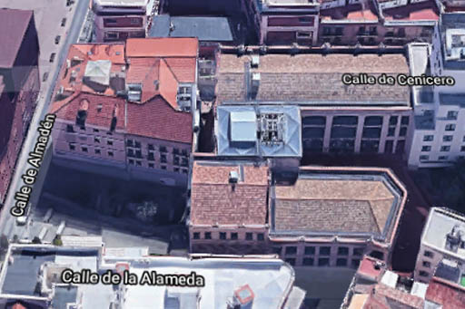

Medialab Prado es un centro cultural que pertenece al Ayuntamiento de Madrid. No es un centro de difusión al uso, como un teatro o un museo, en el que se recibe un contenido ya elaborado, sino que aquí es la propia ciudadanía quien proporciona ese contenido.
Medialab es un espacio de creación y de producción, un laboratorio ciudadano donde la gente se reúne en comunidades de aprendizaje para investigar y trabajar de manera colaborativa en proyectos culturales abiertos y de licencia libre.
⇧ Volver arriba
Está situado en el Barrio de las Letras, en la calle Alameda número 15, muy cerca del Paseo del Prado y de CaixaForum. La fachada principal, orientada al Norte, da a la Plaza de las Letras; las fachadas laterales dan a las calles Cenicero, al Este, y Alameda, al Oeste; y por detrás linda con la fachada trasera de un hotel.
Alrededor del edificio encontramos las típicas edificaciones del centro de Madrid: casas de 3 o 4 pisos, con arquitectura de los siglos XIX y XX, algunas más arregladas y otras menos, y calles estrechas y adoquinadas.
La entrada principal está en la Plaza de las Letras y también podemos acceder al patio del edificio por la calle Alameda.
⇧ Volver arriba
El edificio era una antigua serrería, la Serrería Belga, obra del arquitecto Manuel Álvarez Naya, construida en los años veinte del pasado siglo. Estuvo funcionando hasta mediados de los años 70 y fue abandonando sus actividades paulatinamente hasta quedar en desuso, siendo rehabilitado entre 2007 y 2013 para convertirse en sede de Medialab Prado.
Es uno de los pocos ejemplos de arquitectura industrial que se conserva en el centro de Madrid. La estructura original del edificio está intacta: dos naves rectangulares paralelas, separadas por un patio abierto, de tres plantas cada una y con cubierta a dos aguas. Están construidas en su totalidad de hormigón armado, con pilares cuadrados y vigas acarteladas que sujetan techos de este mismo material. Además de reducir el riesgo de incendios, algo fundamental en un lugar donde se trabajaba con madera, este sistema constructivo de hormigón permitía crear espacios diáfanos que facilitaran la continuidad de los procesos de trabajo, así como plantas de gran altura con numerosos ventanales que aumentaran la luminosidad y la ventilación.
Por fuera, las naves están recubiertas con un revoco de color crema imitando sillares de piedra. Las ventanas quedan enmarcadas por sencillas molduras y un llamativo alfeizar de azulejos verdes. El estilo historicista del exterior, sobrio y elegante, contrasta con el aspecto industrial y sin decoración del interior, donde se dejó el hormigón gris a la vista, con su característica textura rugosa y las marcas del encofrado.
⇧ Volver arriba
La rehabilitación de la Serrería Belga corrió a cargo del estudio de arquitectura de María Langarita y Víctor Navarro, que trataron de conservar el espíritu original del edificio, añadiéndole algunos elementos de modernidad que reflejasen la vinculación del centro con la cultura digital.
Uno de estos elementos es la escalera colgante, llamada La Cosa, que une las dos naves por su fachada Norte. Está formada a base de poliedros irregulares de paredes blancas que se iluminan de colores por la noche.
Otro elemento vanguardista es la enorme pantalla de luces LED que recubre gran parte de la fachada principal, en la que se proyectan juegos, animaciones y vídeos.
En el interior de las naves, que son como enormes contenedores de hormigón, se construyó en cada planta una estructura poligonal de madera para para albergar elementos como el ascensor, las escaleras de emergencia, los baños o la maquinaria del edificio. Es una madera clara, lijada y sin barnizar, que contrasta con el gris del hormigón, aportando calidez al ambiente. Estas estructuras ocupan la parte septentrional de las naves, y están colocadas unas sobre otras, dando la sensación de que atraviesan los tres pisos de arriba abajo. La elección de la madera para los elementos añadidos es un guiño a la antigua serrería.
Para respetar la amplitud del edificio, el resto de la nave queda abierta, sin paredes. Los espacios se separan, de techo a suelo, mediante mallas metálicas de rombos, parecidas a la tela de gallinero, que dejan pasar el aire y el sonido y permiten ver a través de ellas.
El suelo es de hormigón pulido de color gris oscuro, casi negro. En los techos, para realzar el aspecto industrial del interior, se dejan todas las instalaciones a la vista: las tuberías del sistema anti-incendio, finas y de color rojo intenso; unas rejillas metálicas que contienen el cableado eléctrico y de internet; y los grandes tubos de lona gris del sistema de climatización, de 45 centímetros de diámetro, que se inflan cuando se enciende y se desinflan cuando se apaga, y que dejan salir el aire caliente o frío a través de unos agujeritos. Las lámparas son unos tubos de color blanco, parecidos a los fluorescentes pero más grandes, que cuelgan en diferentes direcciones, a veces línea recta y otras en zigzag, emitiendo una luz intensa y cálida.
Otro de los elementos añadidos en la rehabilitación es el Fablab, el laboratorio de fabricación digital, construido a nivel subterráneo bajo la Plaza de las Letras, y al que se accede desde la Nave Alameda. Es como una serrería digital, en la que se sigue trabajando la madera pero con una tecnología diferente.
⇧ Volver arriba
Medialab consta por tanto de dos naves, una al Este, junto a la calle Cenicero, y otra al Oeste, junto a la calle Alameda.
En la nave Alameda están los Labs o espacios de trabajo. En la planta baja encontramos el mostrador de información, el acceso al Fablab y el Lab 0, con la sala de exposiciones; en la planta primera, el Lab 1 y los Minilabs; y en la segunda, las residencias para artistas.
En la planta baja de la nave Cenicero está la cantina; en la primera, las oficinas; y en la segunda, el auditorio.
⇧ Volver arriba
⇦ Anterior: El proyecto
⇨ Siguiente: El edificio por fuera